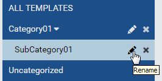
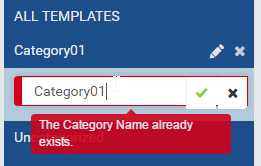

Dashboard List¶
The Dashboard List and Viewer page allows user to
|
|
Browse Dashboards¶
In browser, log in to Izenda as a user with Dashboard permission.
Click Dashboards.
The dashboards are listed in their respective categories and sub-categories.
Click the plus icon on the right to view dashboard properties (Fig. 332).
The buttons at the bottom allow user to Open (in Dashboard Designer), Copy or Move to another name or category, Print, Email, add Subscriptions, or Detele the dashboard.
{kind=link}
{kind=link}
Search for Dashboards¶
The Search box at the top allows user to search for specific dashboards.
- Select a specific element to search for in the dropdown on the left of the Search box. Default is All.
- Type a partial name and click the search icon (üîç).
- The matching dashboards will be displayed.
{kind=link}
Rename Dashboard Categories¶
- 
Fig. 334 Dashboard List - Rename Category
Click the pencil icon to rename a dashboard category.

Fig. 335 Dashboard List - Confirm New Category Name
Enter the name in place and click the check icon to save.
- 
Fig. 336 Dashboard List - Duplicated New Category Name
The new name will be checked for duplication with existing categories.
{kind=link}
{kind=link}
Copy or Move Dashboard¶
- Click the Copy or Move button to open the pop-up.
- The pop-up is similar to Report (Copy a Report and Move a Report)
- Click OK to close the pop-up and perform the operation.
Manage Subscriptions for Current User¶
- Click the Subscribe button to open Subscription box.
- Add and Edit Dashboard Subscription are similar to Report Subscription.
- To delete multiple subscriptions:
- Tick the checkboxes beside each one.
- Click the now enabled Delete icon at the bottom (that looks like a waste basket)
- Click Close to collapse Subscription box.
{kind=link}
Fig. 337 Dashboard Subscription Delete Multiple
Manage Schedule Deliveries¶
- Click the Schedule button to open Schedule list.
- The Schedule List, Search, Add and Delete functions are similar to Report Designer.
Print Dashboard¶
- Click the Print button and select either HTML or PDF format to open Print pop-up.
- The Print pop-up is similar to Dashboard Designer.
Email¶
- Click the Email button and select either Link or Embedded HTML to open Compose Email pop-up.
- The Compose Email pop-up is similar to Dashboard Designer.
View Dashboard¶
Click on a dashboard’s name to go to Dashboard Designer screen.
Configure Child Report Parts¶
Click the Configuration mode (page flip) icon on report part’s title bar to configure it and show the Report Part Menu.
- The title and description can be edited and formatted.
- The Report Part Menu allows user to:
- View, quick edit and design report parts in new window
- Print and export report parts
- Re-select report parts by clicking Select Report Part button, then select another report part in Report Part Selection pop-up similarly to the steps in Dashboard Designer.

Fig. 338 Report Part Menu in Dashboard